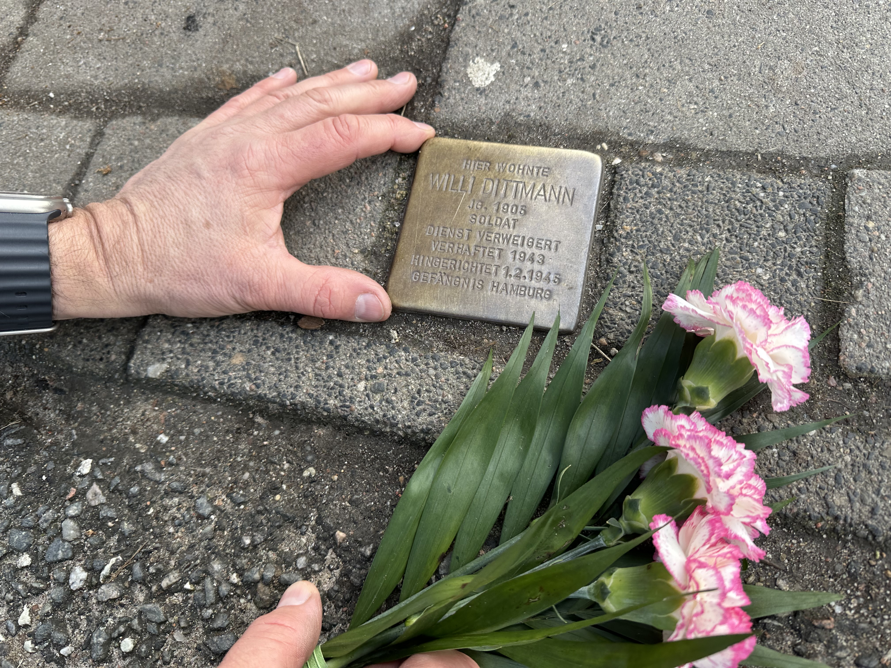

Gedenken an NS-Opfer
Wir treffen uns mit zwei Mitgliedern des Ortsbeirates Hassee und mit Jörn Arp am Stolperstein am Eingang der Siedlung. Die 10×10 cm große Messingplatte erinnert an Opfer des NS-Regimes, in diesem Fall an Willi Dittmann, den Großvater von Jörn Arp.
Seine Ur- und Großeltern haben hier in der Wohnsiedlung gewohnt. „Im Block 47. Das ist das vorletzte Reihenhaus auf der linken Seite, die dritte Tür rechts“, so Arp. Auch er selbst hatte von 1965–1970 gegenüber mit seinen Eltern und den sechs Geschwistern gelebt. Doch darum geht es hier nicht.
Jörn Arp wünscht vielmehr, dass das Gedenken an seinen Großvater deutlicher gemacht wird. Er wünscht sich, dass ein Weg nach ihm benannt wird, und zwar der Sandweg neben der Siedlung, der zu den Kleingärten hochführt. „Hier sind wir als Kinder den Berg runtergerodelt“, erinnert sich der 70-Jährige.
Mehr noch: Arp setzt sich dafür ein, am Wegrand einen Gedenkort zu schaffen. Eine Art „Platz der Deserteure“ für acht Grabsteine, die derzeit auf dem Olsdorfer Friedhof liegen, und zwei weitere aus Halle und Leipzig. „Es wäre schön, wenn man die hingerichteten Söhne Kiels in ihre Heimatstadt zurückführen könnte, um ihnen ihren Namen und ihre Würde zurückzugeben“, regt jörg Arp an. „Um nicht zu vergessen.“
„Die Idee mit den Gedenksteinen finde ich total super“, bestärkt ihn der Ortsbeiratsvorsitzende Oliver Voigt. Er glaubt allerdings nicht, dass die Entscheidung im Ortsbeirat gefällt werden kann. „Über die Benennung des Weges werden wir aber gern beraten.“


{kind=link}
{kind=link}
{kind=link}